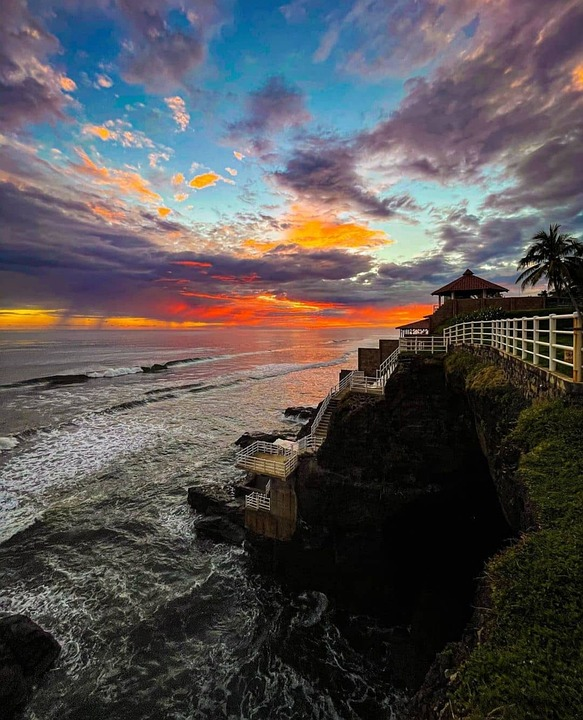

Al estar ubicada en la ciudad más importante del departamento de La Libertad esta playa cuenta con un elevado número de visitantes en el transcurso del año. Por este motivo es que cerca de este lugar se pueden observar múltiples atractivos y comodidades para los visitantes tales como servicios de hospedaje como restaurantes de muy buena calidad
Si la playa es lo tuyo, La Libertad es uno de los departamentos que deberás recorrer, ya que en él encontrarás diferentes destinos si amas el surf o si quieres relajarte. Ubicado en la zona central, su cercanía a la capital y la accesibilidad son algunos de los motivos por lo que muchos llegan a La Libertad, ya que a menos de una hora estarás degustando de un manjar de mariscos frescos, te desconectarás del bullicio de la ciudad y disfrutarás de un bello atardecer.